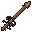
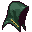

Archery's Fair Share
You're right that mages feel stronger, but the numbers say it isn't the damage: an archer already out-damages a mage on a plain monster at nearly every level past 40 (11.9 a second to 9.5 at 99). Magic wins on everything around the damage: an element that most monsters are weak to, fifteen utility pages that make it the travel, farming and gem class, a crafting skill everyone buys from, and whole areas archers can't touch. So the fix is to give archers an identity of their own, not more damage. Below: what's measured, what other games do, ten ideas, a calculator to try them, and a demo of the one I'd build first.
What's actually unfair
Measured from the rules: each style at the same level in the best kit it can wear, damage per second against a monster of defence level ÷ 2, through the server's own hit formula. This is the plain number, before elements, sizes and guards.
What other games do for archers
The archer classes people love are rarely the biggest hitters. They're the ones that move while they fight, track and trap, and own a kind of target nobody else can reach.
| Game | What makes its archer feel special | What we'd take |
|---|---|---|
| Old School RuneScape | Ava's device (picks up your arrows), "rapid" style, chinchompas (thrown AoE), safespots only ranged can use | Arrow recovery, safespots |
| RuneScape 3 | Abilities (Snipe, Rapid Fire, Bombardment), Surge/Escape for mobility | The ability bar, archers first |
| World of Warcraft (Hunter) | A pet, traps, tracking monsters on the minimap, Camouflage, Feign Death, shooting while moving | Tracking, traps, camouflage, a pet |
| Diablo / Path of Exile | Kiting: fire while backing off, traps and mines, a dodge roll | Shoot on the move |
| Monster Hunter (Bow) | Coatings: dip arrows for poison, paralysis, close range, power, none of them elements | Coatings (not elements: your rule) |
| Guild Wars 2 (Ranger) | A pet that fights beside you, long-range sniping | The hawk |
Ten ideas
Each says which gap it closes and roughly how big a job it is on dev. None gives arrows an element: you decided magic keeps those.

My first pick
Archery's answer to utility pages: nine kits made at the fletching table, tiered by your Fletching the way pages tier by Wizardry. Travel, gathering and hunting that only an archer can do: grapple shortcuts, camouflage, snares, bowfishing, flares. The list ↓
About 4 days (pages already have the plumbing: a scroll item, a timed buff, a tier).

Second
Archers keep firing while they walk, at 70% of their usual rate. Walk away from a monster that only hits up close and you take nothing; a mage has to stand still to cast. This is the thing that makes archers feel like archers in every game that gets it right. Try it ↓
About 2 days: the server already lets a launcher fight from range; it would just not cancel the fight when you move.

Third
Archery's version of elements. Monsters get a family (Beasts, Birds, Undead, Giants, Constructs, Spirits, Critters, Brutes). Every kill with a bow adds lore; five ranks per family, each +5% damage and accuracy against it, up to +25%. Shown in the Character window as eight bars.
- Mages pick the right element; archers earn theirs by hunting, a long-term progression on every map.
- A Hunter's Mark kit (below) lends +10% against one family for 20 minutes, for a family you haven't hunted much.
About 2 days, plus tagging all 109 monsters (none have a family today).

- Quivers add stats by wood (+2 to +18 accuracy, +1 to +9 strength), so a quiver is an upgrade, not just a bag.
- A Ranger set (hood, jerkin, bracers, boots) whose pieces add archery accuracy (today no armour adds attack for anyone). Set bonuses: 2: +1 reach · 4: shoot on the move at full rate.
- An archer's ring and amulet line at Bom's, so the jewellery question has an answer.
About 2 days, mostly art.
Dip a stack of arrows in an oil from the cauldron (Alchemy): Barbed (bleeds 30% over 3 s), Blunt (knocks back a tile, 10% to stun), Broadhead (+25% on big monsters), Serrated (shreds 2 defence a hit, stacks to 10), Whistling (pulls the monster to you). Like Monster Hunter's coatings: effects, never elements.
About 3 days.

Abilities are built and held. Launch them with archery's three (Power Shot, Volley, Disengage) and add two archery-only ones: Pinning Shot (roots a monster 3 s: it can't chase you) and Rain of Arrows (a 3×3 patch takes hits for 4 s). Ties straight into shoot on the move.
About 2 days for the two new ones; the bar exists.

A cliff map where most monsters fly or perch on ledges: only arrows (and a wand's shorter reach, from the right spots) can hit them, and the ledges are joined by grapple points. Its boss circles overhead. Archery's sure shot here, the way the Frozen Reach is magic's.
About 5 days through the map pipeline.

A world event: raiders come at the Yard's wall from the river, and the wall has battlements only ranged can use. Melee holds the gate below. CASINO calls it; everyone who fought shares the pot. The Yard raids were the biggest hit, so this is one in the same mould where archers are the stars.
About 3 days on the raid template.
A pet only an archer can raise, from an egg found at the Roost. While you shoot it fetches arrows (25% come back) and marks the target (+5%). It's the WoW Hunter's pet in EastScape's pet system.
About 1 day plus art.

- The Frozen Reach's three at 0% to arrows go to 40% (still magic's map, no longer a wall).
- Big-monster bonus +20% → +30%.
- A quiver that retrieves 20% of arrows at the top tier.
Under a day: three numbers and a field.
Field kits: archery's pages
Made at the fletching table from things Fletching already uses (feathers, shafts, string) plus a little from other skills, so Fletching gains customers the way Wizardry has. Archery-only to use; a tier from your Fletching when you make it; one kit buff at a time, like pages.
 Fletching table · Field kitsarchers only
Fletching table · Field kitsarchers only


Try the numbers
The bars are measured damage per second at the level you pick, against the kind of target you pick, with any of the proposals switched on. The dashed line on the archery bar is where it is today.
Shoot on the move
Two runs against the same two Junkyard Dogs (they only bite up close). Click to walk. In Today walking cancels your shot, the way every style works now; in Proposed you keep firing at 70% of the rate while you walk. Kite them in a circle and watch the health bar.
My order
| # | Idea | Why first | Size |
|---|---|---|---|
| 1 | Field kits | The biggest gap is utility, not damage. This gives archers travel, safety and gathering of their own, and gives Fletching customers. | ~4 days |
| 2 | Shoot on the move | The single change that makes archery feel different from magic in every fight. | ~2 days |
| 3 | Hunter's Lore | Archery's elements, earned by hunting: long-term progression that matches magic's +35% on most monsters. | ~2 days + tagging |
| 4 | Quick fixes | Free fairness now: the Frozen Reach no longer a wall to archers. | <1 day |
| 5 | Ranger gear, the hawk, coatings, the ability bar, the Roost, Hold the Wall | The fuller identity, as content passes. | 2-5 days each |
Nothing here is built. The calculator's proposal multipliers are first-pass numbers; the base bars are measured from the rules.